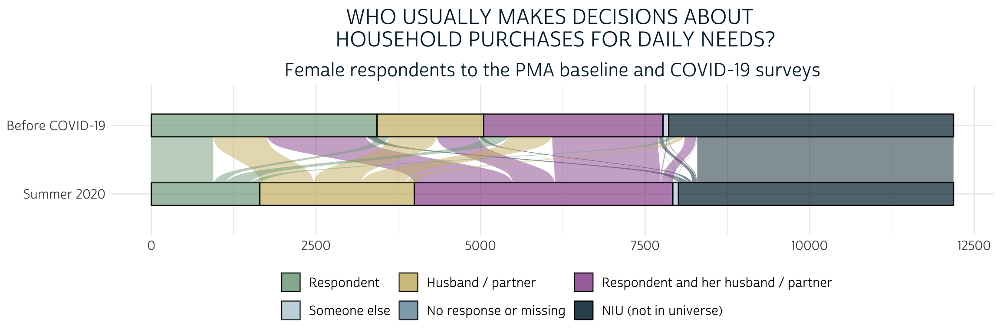
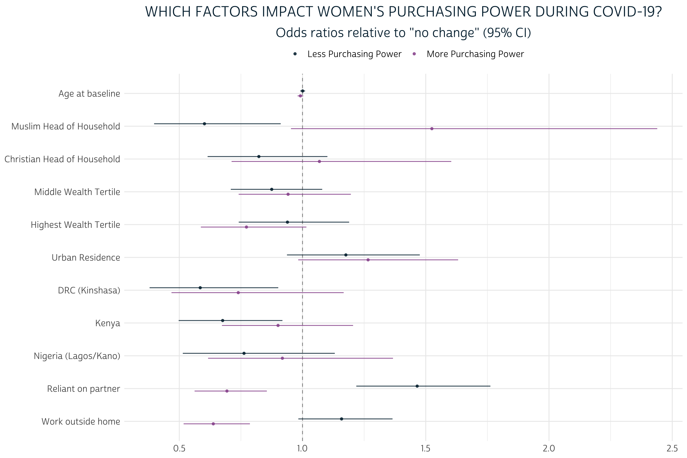

Throughout our discussion of the PMA COVID-19 survey this summer, weve mentioned that PMA COVID-19 data were collected in telephone interviews with women following a baseline survey as part of an ongoing panel study focused on family planning and reproductive health.
While the scope of the COVID-19 survey is narrower than the baseline survey, it does contain several repeated questions designed to help researchers evaluate change over the first few months of the pandemic. For example, both surveys contain questions about womens financial independence and the dynamics of household decision-making. In the baseline survey, youll find a variable called HHDECDAILY representing a question that asks:
Who usually makes decisions about making household purchases for daily
needs: you, your husband/partner, you and your husband/partner jointly,
or someone else?
[] Respondent
[] Husband/partner
[] Respondent and husband/partner
[] Someone else
[] No responseIn the covid survey, a nearly identical question asks women to reflect on changes that happened since COVID-19 restrictions began. Responses are recorded in CVBUYDECIDER:
Since the Coronavirus (COVID-19) restrictions began, who usually makes
decisions about making household purchases for daily needs: you, your
husband/partner, you and your husband/partner jointly, or someone else?
[] Respondent
[] Husband/partner
[] Respondent and husband/partner
[] Someone else
[] No responseOne way you might model change over time with these variables is to look at womens net change in purchasing power with a derived factor that takes the value:
- More if a woman has gained autonomy,
- Less if she has lost autonomy,
- Same if she experienced no change, or
NAif eitherHHDECDAILYorCVBUYDECIDERis not available
In this post, well demonstrate how to create and model this type of variable by merging the baseline and COVID-19 surveys together. Weve modeled continuous and binary variables in previous posts, but well need a different approach for a dependent variable with three outcomes: in this case, well fit a multinomial logit model for the odds that a woman will experience the Less or More autonomy relative to maintaining the Same level of autonomy. This task is complicated by two things:
- Only around half of the women who participated in the in-person baseline survey were reached by telephone for the COVID-19 follow up. Well show how changes in the sample design introduce bias to the merged data, and well explain how to mitigate that bias with a sampling weight called
CVQWEIGHT. - PMA screens households for reproductive age women within geographically defined sampling clusters represented by the variable
EAID. Our multinomial model should include cluster-robust standard error estimates - in other words, we want to account for correlation between neighboring women who live in the same cluster.
Until recently, popular R packages for multinomial regression had no built-in way to handle elements of complex survey design. Fortunately, the new svyVGAM package offers a simple interface built on the very same survey package weve featured throughout this blog. Well demonstrate fitting a multinomial model with CVQWEIGHT and EAID here, but this package also provides a general interface to any generalized linear / additive model supported by the underlying VGAM package.
Setup
Weve mentioned in previous posts that youll find harmonized PMA COVID-19 data if you navigate to the COVID-19 unit of analysis on the IPUMS PMA website. In this post, well use an extract containing all four of the available COVID-19 samples (Female Respondents only):
- Burkina Faso 2020
- Democratic Republic of Congo (DRC) 2020 - Kinshasa
- Kenya 2020
- Nigeria 2020 - Lagos and Kano
Data from the baseline surveys are located under the Family Planning - Person unit of analysis. Because data extracts can only contain samples with the same unit of analysis, youll need to create and download two separate extracts. Once youve downloaded an extract containing COVID-19 data, switch units of analysis by clicking the CHANGE link in the Currently Browsing window at the top of your screen:

Then, select the Family Planning - Person unit of analysis in this menu:

Youll need to create an extract that contains these samples (again, Female Respondents only):
- Burkina Faso 2020
- Democratic Republic of Congo (DRC) 2019a - Kinshasa
- Kenya
- Nigeria 2019a - Kano
- Nigeria 2019b - Lagos
In the example workflow shown below, weve downloaded both extracts and saved them together in the data folder of our R working directory. Weve also installed and loaded the following packages:
Now, well load both of our data extracts into R. Well create two separate dataframes named covid and baseline (well also edit the variable COUNTRY in each extract for additional clarity):
covid <- read_ipums_micro(
ddi = "data/pma_00032.xml",
data_file = "data/pma_00032.dat.gz"
) %>%
mutate(COUNTRY = as_factor(COUNTRY %>% lbl_relabel(
lbl(2, "DRC (Kinshasa)") ~ .val == 2,
lbl(9, "Nigeria (Lagos/Kano)") ~ .val == 9
)))
baseline <- read_ipums_micro(
ddi = "data/pma_00039.xml",
data_file = "data/pma_00039.dat.gz"
) %>%
mutate(COUNTRY = as_factor(COUNTRY %>% lbl_relabel(
lbl(2, "DRC (Kinshasa)") ~ .val == 2,
lbl(9, "Nigeria (Lagos/Kano)") ~ .val == 9
)))
One last thing here: well be making several graphs to help illustrate our workflow in this post. Well create a custom theme theme_pma() for those graphs so that the fonts, colors, and other design elements match the overall look of this blog.
library(showtext)
font_add(
family = "cabrito",
regular = "../../fonts/cabritosansnormregular-webfont.ttf"
)
showtext_auto()
theme_pma <- function(title, subtitle = NULL, x = NULL, legend.position){
components <- list(
theme_minimal() %+replace%
theme(
text = element_text(family = "cabrito", size = 14),
plot.title = element_text(
size = 18, color = "#00263A", margin = margin(b = 10)
),
plot.subtitle = element_text(
size = 16, color = "#00263A", margin = margin(b = 5)
),
legend.title = element_blank(),
legend.position = legend.position,
strip.text.y = element_text(size = 12, angle = 0),
panel.spacing = unit(2, "lines")
),
scale_fill_manual(
values = alpha(
colour = c(
"#00263A", # IPUMS Navy
"#7A99AC", # IPUMS Blue Grey
"#BDD2DE", # IPUMS Medium Grey
"#98579B", # PMA Pink
"#CCBA72", # Tan
"#81A88D" # Green
)
),
na.value = "#F0E6F0"
),
scale_color_manual(
values = alpha(
alpha = .85, # .85 creates bars that are 15% transparent
colour = c(
"#98579B", # PMA Pink
"#00263A" # IPUMS Navy
)
)
),
labs(
title = toupper(title),
subtitle = subtitle,
x = x,
y = NULL,
fill = NULL
),
guides(fill = guide_legend(reverse = TRUE, byrow = TRUE))
)
}
Sampling Weights
Remember that interviews for the baseline survey were administered in-person, but the covid interviews were administered via telephone. Suppose we ignored the sampling weight CVQWEIGHT completely: how might the requirement of access to a telephone bias the combined sample of women who participated in both surveys?
Lets take a look at a few of the demographic variables that appear in both baseline and covid. Well use imap_dfr() build a data frame by iterating over both of the data extracts, and well use summarise() to create the following summary statistics:
RESPONDENTS- the total number of women in the sampleMEAN AGE- the mean age of women in the samplePCT URBAN- the percentage of sampled women living in urban areasPCT NO SCHOOL- the percentage of sampled women who never attended schoolPCT MARRIED- the percentage of sampled women who are currently married
samples_tbl <- list(baseline, covid) %>%
imap_dfr(
~.x %>%
group_by(COUNTRY) %>%
summarise(
SAMPLE = if_else(.y == 1, "baseline", "covid"),
RESPONDENTS = n(),
`MEAN AGE` = mean(AGE),
`PCT URBAN` = 100 * mean(URBAN),
`PCT NO SCHOOL` = 100 * mean(EDUCATTGEN <= 2),
`PCT MARRIED` = 100 * mean(MARSTAT == 21)
)
) %>%
arrange(COUNTRY)
samples_tbl %>% kbl(digits = 1)
| COUNTRY | SAMPLE | RESPONDENTS | MEAN AGE | PCT URBAN | PCT NO SCHOOL | PCT MARRIED |
|---|---|---|---|---|---|---|
| Burkina Faso | baseline | 6765 | 28.5 | 59.9 | 64.1 | 59.6 |
| Burkina Faso | covid | 3528 | 29.7 | 74.7 | 54.3 | 62.0 |
| DRC (Kinshasa) | baseline | 2634 | 28.3 | NA | 8.0 | 26.6 |
| DRC (Kinshasa) | covid | 1324 | 29.5 | NA | 3.3 | 34.0 |
| Kenya | baseline | 9549 | 28.8 | 35.3 | 49.5 | 53.5 |
| Kenya | covid | 5986 | 31.1 | 38.2 | 45.4 | 62.1 |
| Nigeria (Lagos/Kano) | baseline | 2627 | 29.5 | 76.4 | 32.3 | 62.0 |
| Nigeria (Lagos/Kano) | covid | 1346 | 31.4 | 87.8 | 16.3 | 63.5 |
Comparing the two samples for each country, we see that the covid follow up represents a sub-sample of the baseline participants that is generally a bit older (adjusting for the passage of time), more urban, more educated, and are more likely to be currently married. If we built a multinomial model without sample weights, our predictions would reflect these biases as well.
Fortunately, the variable CVQWEIGHT corrects the baseline sample weight FQWEIGHT for predicted telephone access and other sources of loss to follow up. If we use the correct weights for each sample in our imap_dfr() function above, we should produce similar estimates for each samples target population:
populations_tbl <- list(baseline, covid) %>%
imap_dfr(~{
if("FQWEIGHT" %in% names(.x)){
wt <- "FQWEIGHT"
} else {
wt <- "CVQWEIGHT"
}
.x %>%
as_survey_design(weights = !!wt, ids = EAID) %>%
group_by(COUNTRY) %>%
summarise(
SAMPLE = if_else(.y == 1, "baseline", "covid"),
`MEAN AGE` = survey_mean(AGE, vartype = NULL),
`PCT URBAN` = 100 * survey_mean(URBAN, vartype = NULL),
`PCT NO SCHOOL` = 100 * survey_mean(EDUCATTGEN == 1, vartype = NULL),
`PCT MARRIED` = 100 * survey_mean(MARSTAT == 21, vartype = NULL)
)
}) %>%
arrange(COUNTRY)
populations_tbl %>% kbl(digits = 1)
| COUNTRY | SAMPLE | MEAN AGE | PCT URBAN | PCT NO SCHOOL | PCT MARRIED |
|---|---|---|---|---|---|
| Burkina Faso | baseline | 28.9 | 22.8 | 59.9 | 68.6 |
| Burkina Faso | covid | 27.9 | 21.4 | 55.1 | 68.9 |
| DRC (Kinshasa) | baseline | 28.3 | NA | 0.4 | 27.0 |
| DRC (Kinshasa) | covid | 28.9 | NA | 0.4 | 31.4 |
| Kenya | baseline | 28.8 | 30.2 | 4.5 | 53.3 |
| Kenya | covid | 28.9 | 27.5 | 1.9 | 54.3 |
| Nigeria (Lagos/Kano) | baseline | 29.7 | 72.1 | 22.6 | 64.1 |
| Nigeria (Lagos/Kano) | covid | 30.4 | 81.9 | 9.8 | 63.3 |
Here, weve used as_survey_design() to specify the correct weight wt in each iteration of imap_dfr(). Then, we used survey_mean() to estimate the mean / proportion for each samples target population. Although you might observe some differences between the point estimates derived from baseline and covid, the systematic biases we identified in the samples are no longer present. This will be easier to see in a faceted lollipop plot where we chart both summary tables side-by-side.
populations_tbl %>%
mutate(TBL = "weighted") %>%
rbind(
samples_tbl %>% select(-RESPONDENTS) %>% mutate(TBL = "unweighted")
) %>%
pivot_longer(-c(COUNTRY, SAMPLE, TBL)) %>%
ggplot(aes(x = value, y = TBL, color = SAMPLE)) +
facet_grid(
rows = vars(COUNTRY),
cols = vars(name),
scale = "free_x",
as.table = TRUE
) +
geom_point(size = 3) +
geom_line(aes(group = TBL), alpha = .5, color = "#000000") +
theme_pma("Sample design: weighted vs unweighted", legend.position = "top")
In nearly every case, the gap between baseline and covid is narrower for the weighted population estimates than it is for the unweighted sample statistics.
For example, consider the summary statistic PCT URBAN. 59.9% of the women in the Burkina Faso baseline sample reside in urban areas, compared to 74.7% of women in the covid sample. Thats a 14.8% difference! With weights applied, we use baseline to estimate that only 22.8% of women in Burkina Faso actually live in urban areas; compare this to the 21.4% estimate produced from covid. The difference between the two population estimates is much smaller - just 1.4%.
Change in purchasing power
Well now focus our attention only on the respondents who participated in both baseline and covid as we explore changes that occurred during the intervening months. Well create a merged dataset that contains one row per person and drops anyone who didnt participate in the covid survey. We should also preserve duplicate variables - or variables that appear in both extracts; well need to change their names so that its easy to determine which version came from which survey.
Either left_join() or right_join() from the dplyr package can be used here; the only difference is that left_join() discards rows from the data provided to y, while right_join() discards rows from the data provided to x (we could put baseline in either position). Well use left_join().
Each participant in baseline will have a unique identification code in FQINSTID that appears again in covid. So, well tell left_join() to merge rows connected by the same FQINSTID with by = "FQINSTID"
Finally, well use the suffix argument to handle variables that appear in both extracts. For example, AGE from covid will be renamed AGE_CV, while AGE from baseline will be renamed AGE_BASE.
merged <- left_join(
x = covid,
y = baseline,
by = "FQINSTID",
suffix = c("_CV", "_BASE")
)
The variables well use to construct our models dependent variable - HHDECDAILY and CVBUYDECIDER - will now appear together in the same row for each woman who participated in both surveys. For both variables, the universe is women who were currently married or living with male partner. Before we get started, lets take a quick look at an alluvial plot showing the general shifts from one variable to the other:
merged %>%
select(FQINSTID, HHDECDAILY, CVBUYDECIDER) %>%
pivot_longer(!FQINSTID) %>%
mutate(
name = if_else(name == "HHDECDAILY", "Before COVID-19", "Summer 2020") %>%
as_factor() %>%
fct_rev(),
value = value %>%
as_factor() %>%
fct_recode(
"Resdponent" = "1", "Husband/partner" = "2", "Joint" = "3",
"Someone else" = "4", "No response" = "98", "Not partnered" = "99"
) %>%
fct_rev()
) %>%
ggplot(aes(
x = name,
stratum = value,
fill = value,
alluvium = FQINSTID
)) +
geom_stratum(alpha = 0.7) +
geom_flow() +
coord_flip() +
theme_pma(
title = "Who usually makes decisions about \n household purchases for daily needs?",
subtitle = "Female respondents to the PMA baseline and COVID-19 surveys",
legend.position = "bottom"
)

Here, we see that a majority of women who independently made purchasing decisions at baseline began either making decisions jointly or deferred to their husband/partner or someone else after COVID-19 restrictions began. At the same time, a sizable portion of the women who made decisions jointly at baseline no longer reported any role in the covid survey. Well say that all of these women have Less purchasing power when we create our dependent variable.
Some women experienced change in the opposite direction: these include women who gained some authority after having none at baseline, and also women who previously made decisions jointly, but now bear bear full responsibility. Well say that these women have More purchasing power.
Finally, all other women will be said to have the Same level of purchasing power unless either variable contains No response or missing or NIU (not in universe). In the latter case, well use the value NA. This means we will be analyzing a sample of women who were married or living with a male partner both before and during COVID-19 restrictions.
merged <- merged %>%
mutate(PURCHASE_PWR = factor(
case_when(
HHDECDAILY == 1 & CVBUYDECIDER %in% 2:4 ~ "Less",
HHDECDAILY == 3 & CVBUYDECIDER %in% c(2, 4) ~ "Less",
HHDECDAILY == 2 & CVBUYDECIDER %in% c(1, 3) ~ "More",
HHDECDAILY == 3 & CVBUYDECIDER == 1 ~ "More",
HHDECDAILY == 4 & CVBUYDECIDER %in% c(1, 3) ~ "More",
HHDECDAILY < 90 & CVBUYDECIDER < 90 ~ "Same"
),
levels = c( "Less", "Same", "More")
))
Multinomial modeling
Lets now see what our derived variable PURCHASE_PWR can tell us about each samples target population. As shown above, well again specify the sampling weight CVQWEIGHT and the cluster IDs - this time using the COVID-19 version in EAID_CV - as survey design information; well then pass this information to a survey_mean() summary function to produce point-estimates and a cluster-robust 95% confidence interval for each level of PURCHASE_POWER. Well plot these estimates in a grouped bar chart, omitting the percentage of women who are not married / cohabitating with a partner.
merged %>%
as_survey_design(
weights = CVQWEIGHT,
ids = EAID_CV
) %>%
group_by(COUNTRY_BASE, PURCHASE_PWR) %>%
summarise(est = 100 * survey_mean(vartype = "ci")) %>%
filter(!is.na(PURCHASE_PWR)) %>%
ggplot(aes(x = COUNTRY_BASE, y = est, fill = PURCHASE_PWR)) +
geom_bar(width = .6, position = position_dodge(0.6), stat = "identity") +
geom_errorbar(
aes(ymin = est_low, ymax = est_upp),
width = 0.2,
position = position_dodge(0.6),
alpha = 0.5
) +
theme_pma(
title = "Net change in purchasing power for daily needs",
subtitle = "Estimated percentages for populations of women age 15-49",
legend.position = "bottom"
) +
coord_flip()

The percentage of women in each population who gained More purchasing power after COVID-19 restrictions began is significantly lower than the percentage of women who maintained the Same or experienced Less purchasing power (we know this because the 95% confidence intervals do not overlap). The comparison between Same and Less is not so clear: while the point estimates suggest that there may be fewer women with Less purchasing power, the difference is not statistically significant (except in Kenya, where the two confidence intervals do not overlap).
To demonstrate a multinomial model for these outcomes, well select a set of variables that describe demographic features and economic circumstances for each woman. As a reminder: for variables that appeared in both baseline and covid, well need to specify which to include in our model by appending the suffix _BASE or _CV - for the most part, well use the baseline version. Well include these covariates (modifying / recoding as needed):
- AGE_BASE - age at baseline
- URBAN_BASE - lived in an urban area at baseline: TRUE or FALSE
- WEALTHT - wealth score tertile: Highest, Middle, Lowest (reference group)
- RELIGION - religion of the household head recoded as Muslim, Christian, Other (reference group)
- PARTNERECON indicates whether married / partnered women said on the
covidsurvey that there were currently economically reliant on their husband / partner for basic needs: TRUE or FALSE - WORKWK indicates whether women indicated on the
baselinesurvey that she had done any work outside the home in the past week: TRUE or FALSE
merged <- merged %>%
mutate(
RELIGION = factor(
case_when(
RELIGION == 100 ~ "Muslim",
RELIGION %in% 200:300 ~ "Christian",
RELIGION < 990 ~ "Other"
),
levels = c("Other", "Muslim", "Christian")
),
WEALTHT = as_factor(WEALTHT),
URBAN_BASE = case_when(
COUNTRY_BASE == "DRC (Kinshasa)" ~ TRUE,
URBAN_BASE == 1 ~ TRUE,
URBAN_BASE == 0 ~ FALSE
),
across(c(PARTNERECON, WORKWK), ~case_when(
.x == 1 ~ TRUE,
.x == 0 ~ FALSE
))
)
The svyVGAM package can interpret the very same call to as_survey_design() shown above. Well use the generic modeling function svy_vglm() to build our model; it looks similar to the svyglm function weve used to build linear and binary logit models elsewhere, except that the argument family takes a function describing the type of model we want to fit. Use multinomial(refLevel = "Same") to specify a multinomial model with Same as a reference group:
pma_model <- merged %>%
as_survey_design(
weights = CVQWEIGHT,
id = EAID_CV
) %>%
svy_vglm(
formula = PURCHASE_PWR ~
AGE_BASE +
RELIGION +
WEALTHT +
URBAN_BASE +
PARTNERECON +
WORKWK +
COUNTRY_BASE,
design = .,
family = multinomial(refLevel = "Same")
)
One drawback here is that the output of a model created by svyVGAM (or by the VGAM package) cannot be handled by broom::tidy(), which we normally use to clean and standardize model output. Fortunately, broom contains a non-exported function thats capable of handling something similar: the model output created by svyglm() from the sibling survey package! Youll find it in the broom namespace if you use ::: like so:
broom:::tidy.svyglm
function (x, conf.int = FALSE, conf.level = 0.95, exponentiate = FALSE,
...)
{
ret <- as_tibble(summary(x)$coefficients, rownames = "term")
colnames(ret) <- c("term", "estimate", "std.error", "statistic",
"p.value")
coefs <- tibble::enframe(stats::coef(x), name = "term", value = "estimate")
ret <- left_join(coefs, ret, by = c("term", "estimate"))
if (conf.int) {
ci <- broom_confint_terms(x, level = conf.level, ...)
ret <- dplyr::left_join(ret, ci, by = "term")
}
if (exponentiate) {
ret <- exponentiate(ret)
}
ret
}
<bytecode: 0x7fdb364ee358>
<environment: namespace:broom>Well modify this function a bit, creating our own tidy method tidy.svyVGAM() (you may need to make modifications for general use):
tidy.svyVGAM <- function(
x,
conf.int = FALSE,
conf.level = 0.95,
exponentiate = FALSE,
...
){
# Replace `summary(x)$coefficients` with `summary(x)$coeftable`
ret <- as_tibble(summary(x)$coeftable, rownames = "term")
# All of this stays the same:
colnames(ret) <- c("term", "estimate", "std.error", "statistic", "p.value")
coefs <- tibble::enframe(stats::coef(x), name = "term", value = "estimate")
ret <- left_join(coefs, ret, by = c("term", "estimate"))
if (conf.int){
ci <- broom:::broom_confint_terms(x, level = conf.level, ...)
ret <- dplyr::left_join(ret, ci, by = "term")
}
if (exponentiate){ret <- broom:::exponentiate(ret)}
# This part only works for the multinomial case, and only if your covariates
# have no ":" in their names - NOT FOR GENERAL USE
ret %>%
separate(term, into = c("term", "y.level"), sep = ":") %>%
arrange(y.level) %>%
relocate(y.level, .before = term)
}
Now, lets look at our model results. Well exponentiate our coefficients, add significance stars, and label each y.level manually to make this table easier to read:
tidy_pma_model <- tidy.svyVGAM(pma_model, exponentiate = TRUE, conf.int = TRUE)
tidy_pma_model %>%
select(-y.level) %>%
rename(PURCHASE_PWR = term) %>%
mutate(sig = case_when(
p.value < 0.001 ~ "\\*\\*\\*",
p.value < 0.01 ~ "\\*\\*",
p.value < 0.05 ~ "\\*",
T ~ ""
)) %>%
kbl(digits = 3) %>%
pack_rows("Less", 1, 12) %>%
pack_rows("More", 13, 24)
| PURCHASE_PWR | estimate | std.error | statistic | p.value | conf.low | conf.high | sig |
|---|---|---|---|---|---|---|---|
| Less | |||||||
| (Intercept) | 1.102 | 0.302 | 0.322 | 0.747 | 0.609 | 1.994 | |
| AGE_BASE | 1.001 | 0.005 | 0.100 | 0.920 | 0.991 | 1.011 | |
| RELIGIONMuslim | 0.602 | 0.212 | -2.398 | 0.016 | 0.398 | 0.912 | * |
| RELIGIONChristian | 0.823 | 0.149 | -1.312 | 0.189 | 0.615 | 1.101 | |
| WEALTHTMiddle tertile | 0.875 | 0.107 | -1.244 | 0.214 | 0.709 | 1.080 | |
| WEALTHTHighest tertile | 0.939 | 0.121 | -0.523 | 0.601 | 0.741 | 1.189 | |
| URBAN_BASETRUE | 1.176 | 0.116 | 1.398 | 0.162 | 0.937 | 1.476 | |
| PARTNERECONTRUE | 1.465 | 0.094 | 4.055 | 0.000 | 1.218 | 1.762 | *** |
| WORKWKTRUE | 1.158 | 0.084 | 1.756 | 0.079 | 0.983 | 1.365 | |
| COUNTRY_BASEDRC (Kinshasa) | 0.585 | 0.221 | -2.429 | 0.015 | 0.380 | 0.902 | * |
| COUNTRY_BASEKenya | 0.676 | 0.156 | -2.503 | 0.012 | 0.497 | 0.919 | * |
| COUNTRY_BASENigeria (Lagos/Kano) | 0.763 | 0.201 | -1.348 | 0.178 | 0.514 | 1.131 | |
| More | |||||||
| (Intercept) | 0.677 | 0.306 | -1.277 | 0.201 | 0.372 | 1.232 | |
| AGE_BASE | 0.991 | 0.006 | -1.451 | 0.147 | 0.980 | 1.003 | |
| RELIGIONMuslim | 1.525 | 0.240 | 1.760 | 0.078 | 0.953 | 2.439 | |
| RELIGIONChristian | 1.069 | 0.207 | 0.321 | 0.749 | 0.712 | 1.603 | |
| WEALTHTMiddle tertile | 0.941 | 0.122 | -0.494 | 0.621 | 0.741 | 1.196 | |
| WEALTHTHighest tertile | 0.773 | 0.140 | -1.848 | 0.065 | 0.588 | 1.016 | |
| URBAN_BASETRUE | 1.266 | 0.129 | 1.824 | 0.068 | 0.983 | 1.631 | |
| PARTNERECONTRUE | 0.693 | 0.107 | -3.420 | 0.001 | 0.562 | 0.855 | *** |
| WORKWKTRUE | 0.638 | 0.107 | -4.209 | 0.000 | 0.518 | 0.787 | *** |
| COUNTRY_BASEDRC (Kinshasa) | 0.739 | 0.233 | -1.297 | 0.195 | 0.468 | 1.167 | |
| COUNTRY_BASEKenya | 0.901 | 0.149 | -0.704 | 0.482 | 0.673 | 1.205 | |
| COUNTRY_BASENigeria (Lagos/Kano) | 0.918 | 0.203 | -0.420 | 0.675 | 0.617 | 1.367 | |
Once youve got the model output in a tidy format, you can also pass it to a tidyverse aligned graphing function, like the popular dwplot from dotwhisker:
tidy_pma_model %>%
mutate(
model = if_else(
y.level == 1,
"Less Purchasing Power",
"More Purchasing Power",
),
sig = gtools::stars.pval(p.value)
) %>%
relabel_predictors(c(
AGE_BASE = "Age at baseline",
RELIGIONMuslim = "Muslim Head of Household",
RELIGIONChristian = "Christian Head of Household",
`WEALTHTMiddle tertile` = "Middle Wealth Tertile",
`WEALTHTHighest tertile` = "Highest Wealth Tertile",
URBAN_BASETRUE = "Urban Residence",
`COUNTRY_BASEDRC (Kinshasa)` = "DRC (Kinshasa)",
COUNTRY_BASEKenya = "Kenya",
`COUNTRY_BASENigeria (Lagos/Kano)` = "Nigeria (Lagos/Kano)",
PARTNERECONTRUE = "Reliant on partner",
WORKWKTRUE = "Work outside home"
)) %>%
dotwhisker::dwplot(
dodge_size = 0.3,
vline = geom_vline(xintercept = 1, colour = "grey60", linetype = 2)
) +
guides(color = guide_legend(reverse = TRUE)) +
theme_pma(
title =
"Which factors impact women's purchasing power during COVID-19?",
subtitle =
'Odds ratios relative to gaining "More" (95% CI)',
legend.position = "top"
)

Because weve exponentiated the coefficients produced by this model, each estimate shows how each covariate changes the odds of experiencing a given level of PURCHASE_PWR relative to the reference group of women who maintained the same level of autonomy since COVID-19 restrictions began. For example, an estimate of 1.0 would indicate equal odds, 2.0 would indicate double odds, and so on.
Generally, the effects of demographic factors in our model are pretty limited. For example, notice the proximity of both AGE_BASE estimates to 1.0. Each additional year of age at baseline is estimated to change the odds that a woman would experience Less purchasing power by just 0.001 - or 0.1%; this is not a statistically significant difference from 1.0, as youll notice that the 95% confidence interval includes values both above and below equal odds. The More estimate for AGE_BASE tells a similar story: while we estimate that each year of age at baseline contributes to a 0.9% drop in the odds that a woman would gain More purchasing power, this difference is not sufficiently far enough from equal odds to indicate statistical significance. Perhaps surprisingly, neither of the variables AGE_BASE, WEALTHT, or URBAN_BASE are significant predictors for any outcome of PURCHASE_PWR.
On the other hand, we see some evidence that RELIGION may have a more meaningful impact, particularly for women living with a Muslim head of household. The estimated odds that such a woman would lose purchasing power are just 60.2% of the estimated odds that she would maintain the same level. Meanwhile, her estimated odds for gaining power are 152.5% - or about one and a half times higher than - her odds of maintaining the same level. The former estimate includes a 95% confidence interval that includes no values above 1.0, but the interval for the latter estimate just barely overlaps with 1.0. Hence, only the estimate for Less purchasing power meets the formal requirement for statistical significance.
Compared to demographic factors, the economic factors weve selected are much more powerful predictors for all levels of PURCHASE_PWR. Controlling for household wealth via WEALTHT, women who indicated on the COVID-19 survey that they were currently economically reliant on their husband/partner were both likely to have lost purchasing power, and unlikely to have gained it. Meanwhile, women who indicated on the baseline survey that they recently worked outside the home were somewhat likely to lose purchasing power, while they were unlikely to gain more. Three of the four estimates from these variables were statistically significant even at the 99.9% confidence threshold.
How might these conclusions change if we hadnt bothered to include CVQWEIGHT and EAID_CV? Without CVQWEIGHT, the point estimates for each of our covariates would shift in a direction reflecting the sample biases in the COVID-19 survey. Sample cluster information specified by EAID_CV doesnt change those point estimates, but it does impact the estimated standard error for each point estimate; if we had omitted EAID_CV, we would have generally underestimated standard error, leading to confidence intervals that are too narrow. Fortunately, the new svyVGAM package made it incredibly easy to incorporate both survey design elements into our multinomial model.
Wrap-up
The four samples weve been examining throughout this summer-long series on PMA COVID-19 data are just one part of a larger panel study youll find on the IPUMS PMA website in the months and years ahead. Youll find information about samples from other countries and plans for additional follow-up surveys on the PMA survey methodology page.
Here at the PMA Data Analysis Hub, we plan to change gears in the coming weeks as we begin a new series on PMA Nutrition Data. However, well continue to focus on COVID-19 data when new surveys become available. For updates, keep an eye on the New Data tag or look for us on Twitter.